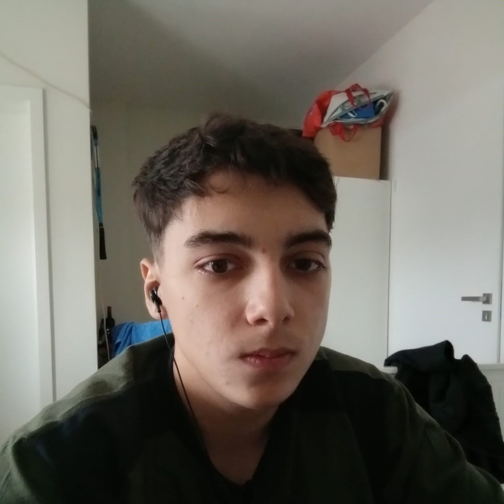

HelloW (Hello World) ,
My name is Hutu Mario Alexandru and I am a computer science student at the "University Of Oradea" + a christian, the order does not matter as I am both in the same time. I think.
I can say that i am quite good with computers even if my highschool teacher was kinda blind to my talent. I feel much more apreciated here ,at the university of oradea and I almost love almost all my teachers and course peers :)
I also feel like I evolve everyday and get closer to my goals thanks to the people that God uses for his great works. Grace be to him.
I remember that i was so hungry that I was hating everybod...
Now I am one of the happiest people ever, but you know I still feel bad because there is still so much evil in this world...
Wars,diseases and broken hearts and souls everywhere...
I believe computers can help us stop those...
And if not I will know I tried, and I had fun, because this thing is really fun for real !
I am still trying to find my way everyday, gain more knowledge and fight with my ego.
Maybe it can help you in some situations, to keep your position...to be strong there, in hard situations
But you must use it ,not it you.
I don't know if this makes sense, I am not a philosopher :)
I love python,I love php,I love c#,I love c++,I love html,I love css,I love...
What I will love next ?
It is nice to be lonely with your computer... I remember when I needed one and wanted one but I had no one...
I was so happy when I finally had enough money to buy one...
But this is not about me, love you all !!!
(Love is the way , I'm making you stay :)))
This is what I am listening to right now, I also love music , music with everything !